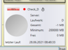

Vishnu - Prozesse beobachten und steuern |
Vishnu ist ein Baukastensystem für Monitoring und Prozesssteuerung.
Mit Vishnu können Sie auf einfache Weise beliebige Prozesse kontrollieren und steuern.
Das können die unterschiedlichsten Dinge sein, wie zum Beispiel:
-
Laufen die Maschinen?
-
Sind die Voraussetzungen für den nächsten Rechnungslauf erfüllt?
-
Starte die Datensicherung!
-
Informiere Mail-Empfänger über Fehler und deren Behebung!
Es können aber auch wissenschaftliche Auswertungen, Geräteüberwachungen im Internet der Dinge sein, einfach alles, was simple Grundvoraussetzungen erfüllt, um von Vishnu verwaltet werden zu können.
|
 Sollte Check_D nach der Installation bei Ihnen etwa so aussehen, dann hat Ihr System aktuell kein Laufwerk D:. Das ist aber für die weitere Betrachtung unwesentlich. |
Wie schon oben skizziert, ist Vishnu eine Software-Lösung zur Überwachung und Steuerung von beliebigen Anwender-Prozessen. Ihre Prozesse können simultan oder in Abhängigkeit voneinander (oder beides) verarbeitet werden. Sie definieren die Zusammenhänge anhand einer einfachen Beschreibungssprache (XML). Die einzelnen Prozesse werden hierbei nach logischen Gesichtspunkten zu Jobs zusammengefasst. Vishnu stellt die Jobs mit ihren Akteuren übersichtlich, wahlweise in einer Baumdarstellung oder als Listen, dar. Die Akteure innerhalb der Jobs können verschiedene weitere Aktionen auslösen, z.B. Meldungen, Mails, andere Jobs, etc. Praktisch alles, was von Vishnu verwaltet werden soll, kann von Ihnen frei bestimmt werden, dazu gehören
-
Jobs - umfassen mehrere logisch zusammengehörende Akteure, die ihrerseits auch wieder Jobs sein können
-
Checker, Worker - beliebige Anwenderprozesse (dll, exe)
-
Trigger - starten Checker, Worker oder Jobs neu, z.B. nach einer bestimmten Zeit
-
Logger, ValueModifier, Connectoren - weitere Typen von Akteuren, die später noch beschrieben werden. Details finden Sie unter Vishnu Akteure und Anforderungen an Anwender-Module.
Vishnu liefert schon eine Reihe
vordefinierter Demo-Jobs, Checker, Trigger und Worker mit,
so dass sofort losgelegt werden kann.
Probieren Sie Vishnu mit dem Einstieg
direkt aus.
Dazu viel Vergnügen und Erfolg.
Erik Nagel
Vishnu ist open source, einen kurzen Überblick mit weiteren Verknüpfungen finden Sie auf GitHub.
Alle Quellen sind unter folgendem Link ebenfalls auf GitHub verfügbar: Vishnu Quellen
Dort finden Sie auch Installationsanweisungen und weitere Informationen.